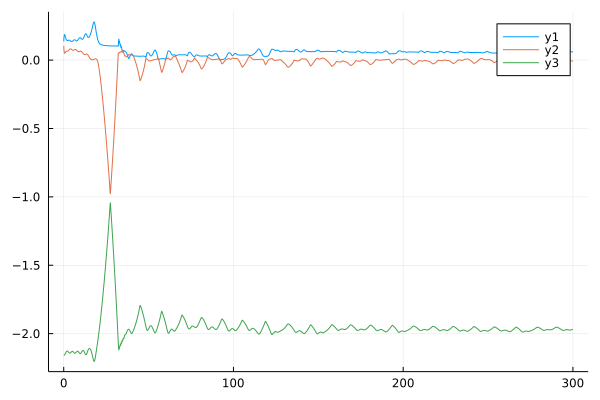
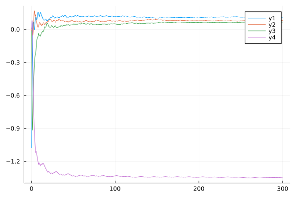

Lyapunov Epxponent
Lyapunov exponent is a quantity we can use to determine the property of a fractional order systems. If there are positive Lyapunov exponents in a given system, that means the given system is chaotic, if there are also negative exponents, that means there are attractors in this given chaotic system. In FractionalDiffEq.jl, we provide performant and easy-to-use API to compute the Lyapunov exponent of the given fractional order system.
Commensurate order system
Let's see, if given a Rabinovich-Fabrikant system:
\[D^{\alpha_1} x=y(z-1+z^2)+\gamma x\\ D^{\alpha_2} y=x(3z+1-x^2)+\gamma y\\ D^{\alpha_3} z=-2z(\alpha+xy)\]
using FractionalDiffEq
function RF(du, u, t)
du[1] = u[2]*(u[3]-1+u[1]*u[1])+0.1*u[1];
du[2] = u[1]*(3*u[3]+1-u[1]*u[1])+0.1*u[2];
du[3] = -2*u[3]*(0.98+u[1]*u[2]);
end
LE = FOLyapunov(RF, [0.98, 0.98, 0.98], 0, 0.02, 300, [0.1; 0.1; 0.1], 0.005, 1000)The output would be:
[0.24348568050729053; 0.007633838815648884; -2.01869669467999]
[0.07157300142223447; 0.006017955472054196; -1.8449594097070114]
[0.02954807020615554; 0.005293698652556152; -1.8022533152602607]
[0.052957613549810205; -0.008645340965388692; -1.811729795783463]
[0.012973090534610711; -0.007161228086636709; -1.7732510305991271]
[0.031221399670846705; 0.014443534887429972; -1.813104301211669]
[0.060185947864662345; -0.008121864429315997; -1.8194985262036134]
[0.05827747678224907; -0.02236380502528364; -1.8033534921771472]
[0.05562485202522532; 0.012690387635387365; -1.8357552036479894]
[0.04968563412570279; -0.0009995900467388353; -1.8161301570507935]
[0.07100223089628108; 0.0019123252012412822; -1.8403598219695858]
[0.06326817286599998; -0.019433471090304896; -1.8112809983953584]
[0.06705094763635554; -0.0015939955503458177; -1.8329059006298087]
[0.059724759994251635; -0.0031386869537530426; -1.8240358860199872]
[0.06111650166568285; 0.0038981396237095034; -1.8324646820425692]The computed LE is the Lyapunov exponent of this system.
julia> LE.LE[end-2:end]
3×1 Matrix{Float64}:
0.06111650166568285
0.0038981396237095034
-1.8324646820425692To visualize the Lyapunov exponent, what just need to plot our LE:
plot(LE)
Another 4-D example:
Let's see the Piece-Wise Continuous (PWC) fractional order system:
\[D^{q} x_1=-x_1+x_2\\ D^{q} x_2=-x_3\text{sgn}(x_1)+x_4\\ D^{q} x_3=|x_1|-a\\ D^{q} x_4=-bx_2\]
By following what we have done before, we can easily get the Lyapunov exponent of this PWC system.
using FractionalDiffEq, Plots
function Danca(du, u, t)
du[1] = -u[1]+u[2]
du[2] = -u[3]*sign(u[1])+u[4]
du[3] = abs(u[1])-1
du[4] = -0.5*u[2]
end
LE = FOLyapunov(Danca, [0.98, 0.98, 0.98], 0, 0.02, 300, [0.1; 0.1; 0.1; 0.1], 0.005, 1000)
plot(LE)By plotting the Lyapunov exponent spectrum:

Noncommensurate order system
<!– add more examples –>
If the fractional of the given system is not commensurate, we can still use FractionalDiffEq.jl to generate Lyapunov exponents, usage is the same as the commensurate case:
using FractionalDiffEq, Plots
function LE_RF_TEST(du, u, p, t)
du[1] = u[2]*(u[3]-1+u[1]^2) + 0.1*u[1]
du[2] = u[1]*(3*u[3]+1-u[1]^2) + 0.1*u[2]
du[3] = -2*u[3]*(0.98+u[1]*u[2])
end
LE = FOLyapunov(LE_RF_TEST, [0.995, 0.992, 0.996], 0, 0.1, 1000, [1,1,1], 0.01, 1000)
plot(LE)